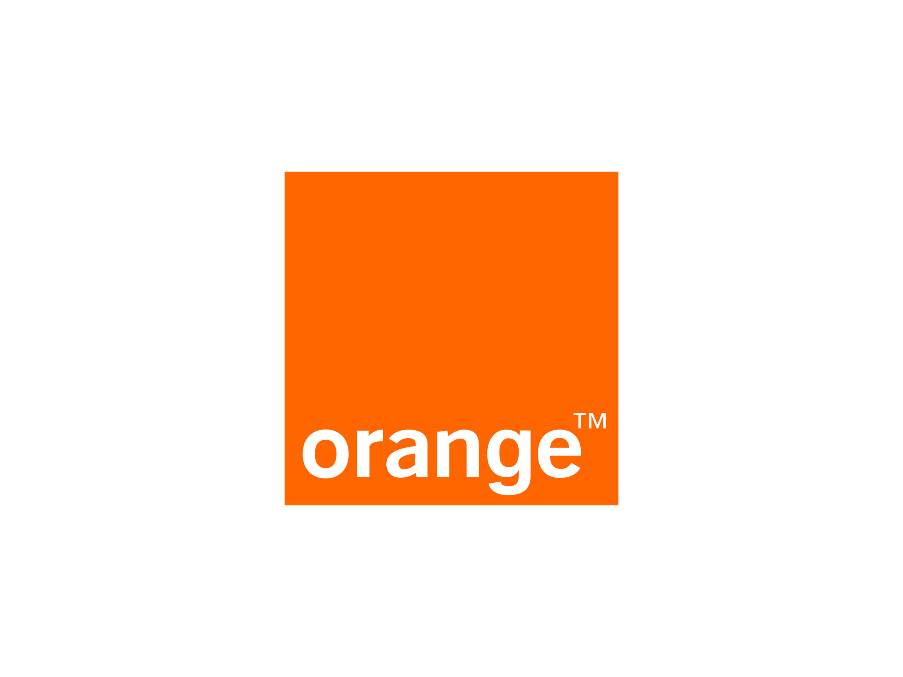

Mon CV
Actuellement en CDI chez Toyota
Expérience Professionnelle
Toyota Material Handling Manufacturing
Juin 2026 - Présent | CDI, Ingénieur support et développement As/400
Lieu: Ancenis-Saint-Géréon
Développement, maintenance et support applicatif sur environnement IBM i. Participation active aux phases de tests, recettes et mises en production.
Assurer le développement, la maintenance et le support des applications sur IBM i tout en optimisant les processus et la qualité.
- Développement et maintenance en RPG III, RPG IV et RPG Free
- Développement d'écrans interactifs et de sous-fichiers (subfiles) ainsi que des programmes associés
- Création et maintenance de menus et sous-menus en langage CL/CLLE
- Gestion et exploitation des données avec DB2 for i / SQL
- Analyse technique et fonctionnelle des besoins et demandes d'évolution
- Support applicatif, analyse et résolution des incidents
- Maintenance corrective et évolutive des applications existantes
- Rédaction et mise à jour de la documentation technique et fonctionnelle
- Participation aux phases de tests, recettes et mises en production
RPG III, RPG IV, RPG Free, CL/CLLE, DB2 for i, SQL, Écrans 5250, Subfiles
NOTOS
Février 2026 - Avril 2026 | Stage, Analyste Développeur AS/400 IBM i
Lieu: Strasbourg
Formation intensive et pratique en développement sur plateforme IBM i (AS/400), incluant l'apprentissage des technologies RPG, CL, SQL, et les bonnes pratiques de développement d'applications d'entreprise.
Acquérir une expertise en développement et analyse sur IBM i pour préparer l'intégration en tant qu'ingénieur support et développement.
- Apprentissage et maîtrise des langages de programmation RPG III, RPG IV et RPG Free
- Développement d'écrans interactifs et de sous-fichiers (subfiles)
- Création de menus et sous-menus en langage CL/CLLE
- Gestion des données avec DB2 for i / SQL
- Analyse de besoins techniques et fonctionnels
- Participation à des projets pratiques de maintenance et évolution
RPG III, RPG IV, RPG Free, CL/CLLE, DB2 for i, SQL, Écrans 5250, Subfiles
Open
2023 - 2025 | Concepteur Développeur Back-end C#.NET
Lieu: Strasbourg
FCR5_GPAO est un logiciel de gestion de la production des cartes qui comprend plusieurs menus et sous-menus avec de nombreuses fonctionnalités. Il facilite la fabrication rapide des cartes à l'atelier de production en proposant des fonctionnalités telles que : L'écran de préparation pour préparer les cartes à produire, L'écran de personnalisation pour le contrôle qualité, L'écran de préparation à la destruction, L'écran de destruction pour détruire les cartes présentant un défaut de fabrication, L'écran de conditionnement avec des sous-menus comme la mise en encart, la mise en sachet et la mise en packaging, etc.
Refonte et support atelier
12 personnes, dont 6 prestataires (développeurs), un chef d'équipe et 5 internes.
- * Refonte des fonctionnalités de l'application FCR5_GPAO tout en les améliorant selon les nouvelles règles de gestion définies par l'AMOA:
- -> Développement d'un nouveau menu permettant de préparé toutes les carte qui sorte avec un défaut de fabrication et les rediriger vers un endroit où elles vont etre détruite.
- -> Refonte du menu permettant la mise en sachet des cartes tout en respectant les nouvelles règles de gestion,
- -> Refonte du menu permettant la mise en packaging tout en respectant les nouvelles règles de gestion
- -> Partage de connaissances et programmation en binôme...
- -> Partage de connaissances et programmation en binôme,
- -> Utilisation considérable de la librairie de requêtage LINQ dans le code source pour traiter les listes et réaliser les filtres...
- * Support client niveau 1:
- -> Déploiement sur les serveurs de tests(recette),
- -> Suivi de la production,
- -> Rédaction des guides et des documents techniques, incluant les cas de tests
- -> Recherche et résolution des bugs,
- -> Montée en compétence sur les procédures stockées
- * Rédaction des guides et des documents technique , incluant les cas de tests réalisés sur le serveur de test.
- * Méthodologie et Suivi de versioning : Agile ( Scrum light), RTC(équivalent GitHub)
C# 7.3, DevBooster(.NET 4.8), LINQ to SQL, Microsoft SQL Server, Visual studio 2019.
Orange France
2021 - 2023 | Développeur back-end/front-end (Stage + CDI)
Lieu: Arcueil

Réemploi : Il s'agit d'une application web conçu et développé par la direction Innovation & RSE de Orange Arcueil. La plateforme réemploi permet de mettre gratuitement en ligne les catalogues de produits bureautiques a destination des association et salarié Orange.
6 personnes parmi les quelles: 4 développeurs, 1 manager, 1 responsable fonctionnelle.
Développement, support, déploiement et suivi de production.
- * Développement de nouvelles fonctionnalités :
- -> Conception, développement et intégration d'un nouveau catalogue appelé "Catalogue permanent",
- -> Mise en place des messages de relance et la suppression automatique des produits dans un panier au bout de 24h,
- -> Mise en place des option pour la modification des données personnelles,
- -> Mise en place du buton de modification , suppression des produits tout en respectant les droits d'accès de la ressources,
- -> Mise en place des autorisation selon le type de profils ,
- -> Développement des APIs Rest ,
- -> Base en gestion de Projet (définition et priorisation des tâches en fonction du niveau de difficulté),
- -> Évaluation de la charge de travaille,
- -> Rédaction des documents techniques
- * Support client :
- -> Recherche et correction des anomalies/Bugs,
- -> Design thinking en petite équipe pour améliorer ou proposer les nouvelles fonctionnalités selon les exigences des utilisateurs.
- * Méthodologie et gestion de versioning : Agile/Scrum(Trello) , GitHub.
Node.js, Angular 11, PostgreSQL,Visual Studio 2022
Éducation
INEAD - ESMAC
2019 - 2020 | E-LEARNING, France
Master Européen en Management de Projets Informatiques
Ce programme en ligne m'a permis de développer des compétences approfondies en gestion de projets informatiques, couvrant des aspects comme la planification stratégique, la gestion de ressources, et l'optimisation des processus.
Polytechnique de Turin
2014 - 2019 | Turin,Italie
Laurea in Ingegneria Informatica (Licence en Informatique)
Une formation d'ingénierie en informatique qui a renforcé mes compétences en développement logiciel, développement web, et en architecture informatique, tout en me familiarisant avec l'innovation et la recherche technologique.
Formation
POEI Analyste Développeur AS/400-IBM i
2026 | Terminée le 30 avril, France
Préparation Opérationnelle à l'Emploi Individuelle (POEI)
Cette formation intensive me permet d'acquérir des compétences avancées en développement sur plateforme IBM i (AS/400), incluant RPG, CL, SQL, et les outils modernes pour la gestion d'applications d'entreprise.